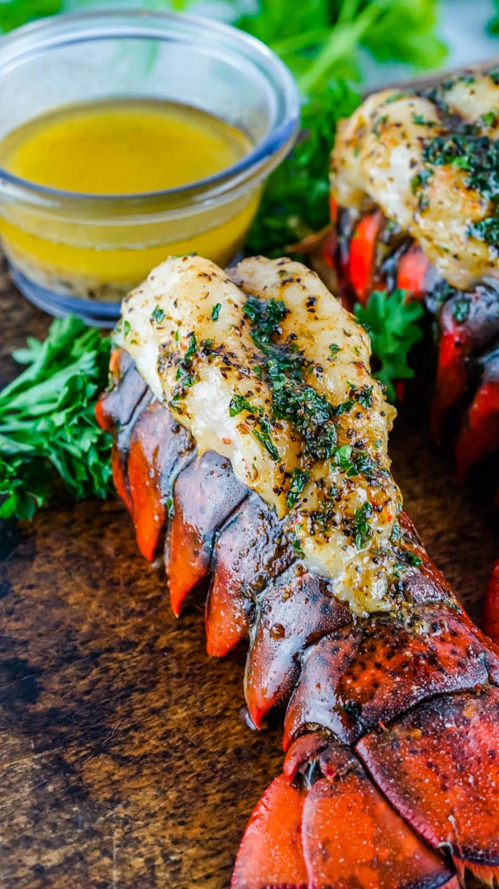

Smoked Lobster

If you’re looking for something to serve for a special occasion, look no
further. Lobster is regarded by many as an absolute delicacy. If you want
to elevate them even more try these smoked lobster tails.
Ingredients
- 4oz lobster tails
- kosher salt
- black pepper
- butter
- garlic
- juice of a lemon
Steps
- Preheat your smoker to 250°F.
- Butterfly your lobster tails and pull the meat out of the shell.
- Season the lobster meat with salt, pepper
-
Place the lobster directly on the grates of your smoker with the
meat-side facing upwards.
-
In a small pot or pan, combine the butter, garlic powder, and lemon
juice
-
Place the pot on the smoker next to the lobster. The butter should melt
within 5 to 10 minutes, leaving you with a simple butter sauce for
basting
- Baste the lobster every 10-15 minutes with the butter sauce.
-
After 45 minutes of cook time, or when the lobster reaches an internal
temperature of 145°F, pull the lobster off the smoker and serve
alongside the remaining butter sauce and an extra squeeze of lemon
juice.